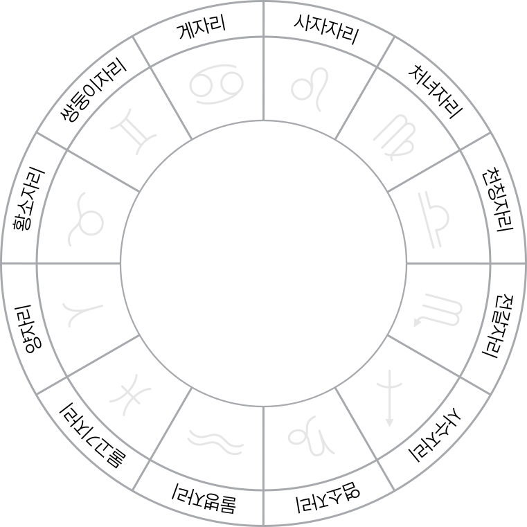

2026년 진행된 상담 내용을 바탕으로 결혼·사업의 큰 흐름·해외 진출과 R&D 성과·시기별 리스크 대응을 주제별로 정리한 헬레니스틱 네이탈 리포트입니다.
목차
제군들 · 1991. 05. 21 13:41 · 부산 · Day Chart

1. 차트 한 줄 요약
제군들 차트는 "지식·전문성·거리"가 인생을 끌고 가는 차트입니다. 처녀 상승, 그 룰러 수성이 9하우스 황소에 들어가 있어 — 멀리 보고, 체계화하고, 실물 결과로 만드는 일이 본인 정체성과 직업의 동일 축으로 묶입니다. 사업·해외·연구가 한 묶음으로 돌아가는 구조.
2. 핵심 행성 배치
- 처녀 상승 / 황소 태양 / 처녀 달 — 흙(Earth) 비중이 강함. 실용·디테일·축적 지향. 겉으로 차분, 안쪽은 매우 분석적.
- 9하우스 태양·수성 (황소) — 본인 정체성의 가장 강한 축이 해외·전문성·교육·연구. 황소 톤이라 컨셉이 아니라 실물 결과로 이어집니다.
- 12하우스 목성 (사자) — 보이지 않는 곳에서 작동하는 행운. 후원·외부 자문·직관이 본인을 살림 (단 표면 노출은 더딤).
- 8하우스 금성 (양·디트리먼트) — 관계·돈·외부 자원은 깊이 들어가서야 풀리는 구조. 표면 결정으론 풀리지 않음.
- 11하우스 화성 (게·낙하) — 동맹·집단 확장에서 공격적으로 밀면 비용이 큰 자리. 합작·파트너십에 사전 룰 필수.
- 6하우스 토성 (물병) — 시스템·문서화·체계화가 본인 차트의 강점. 일하는 구조가 단단할수록 차트가 잘 돌아감.
이번 상담의 중심은 "확장의 속도와 결혼이라는 두 축을 어떻게 균형 잡을 것인가"였습니다.
결혼·사업·해외 진출·리스크 관리 네 가지 질문이지만 본질은 두 가지입니다. 차트가 다루는 영역(사업·해외·전문성)에서 어디까지 밀어붙일 것인가, 그리고 차트가 늦게 단단해지는 영역(결혼·재무 안정)을 어느 시점에 함께 끌어올릴 것인가.
첫 번째 질문은 결혼 가능 여부와 시기였습니다. 두 번째는 사업의 큰 흐름, 세 번째는 북미·유럽·B2G·R&D 다각화에 따른 2026년 안 성과 가능성, 네 번째는 공격적 확장에 따른 시기별 리스크와 대응책이었습니다.
1. 핵심 질문 목록
- 결혼은 가능한가 — 가능, 다만 차트상 결혼은 30대 후반~40대 초반 구간에 무게가 실립니다.
- 사업의 큰 흐름 — 본인 차트의 본업. 길게 보면 매우 강한 차트입니다.
- 해외·B2G·R&D 다각화 2026 성과 — 방향은 정확. 단 단년 압축 성과는 빠듯, 본격 결실은 2027년에.
- 시기별 리스크와 대응 — 현금경색은 표면 결과. 본질 리스크는 의사결정 부하와 사람 매니지먼트.
2. 이번 상담의 큰 그림
사업·해외·R&D 한 축이 본인 차트의 "본업"입니다. 9하우스(해외·학문·확장) 안에 태양과 수성이 동시에 자리 잡고 있어, 이 방향에 의문을 가질 필요는 없습니다. 차트가 가리키는 길과 현재 사업 방향이 거의 그대로 겹쳐 있습니다.
다만 이 차트는 "장기간 단단해지는" 차트라 단년 안에 압축 성과를 노릴 때 비용이 크게 듭니다. 이번 상담의 핵심은 "어디서 가속하고 어디서 절제할 것인가" — 그리고 본업 가속 시기에 결혼·재무 안정을 어떤 박자로 함께 끌어올릴지였습니다.
3. 리포트 읽는 법
- 각 챕터 첫머리의 굵은 한 문장 + 부연이 그 챕터의 핵심 결론입니다. 시간이 없으면 그 부분만 읽어도 됩니다.
- 운로 해석은 헬레니스틱 기준 — 프로펙션 + 메이저 PD를 중심으로 보았고, 2026년이 기준이지만 결혼·사업 같은 큰 주제는 2026~2030년 장기 흐름으로 봐야 정확합니다.
- 같은 이야기가 두세 챕터에 걸쳐 짧게 반복될 수 있는데, 의도된 연결입니다.
결혼은 가능합니다. 다만 본인 차트의 결혼은 일찍 결정되는 형태가 아닙니다.
7하우스(물고기) 룰러 목성이 12하우스(사자)에 들어가 있어, 관계가 외부에서 잘 보이지 않거나 천천히 드러나는 형태로 작동합니다. 금성도 양자리 8하우스에 위치해 — 깊이 들어가야 풀리는 구조입니다.
1. 결혼 차트의 핵심
- 7하우스 룰러 목성이 12하우스 — 결혼 인연이 일·해외·사적 모임 등 12하우스 영역에서 시작될 가능성이 높습니다. 공개적·즉흥적 만남보다 의외 경로.
- 금성 양자리 8하우스 (디트리먼트) — 관계는 시간 들이고 신뢰가 쌓여야 풀리는 구조. 첫인상으로 결정되는 차트가 아닙니다.
- 토성 6하우스 물병 — 결혼은 늦게 단단해지는 차트. 일찍 흥분해서 가는 관계는 깊어지지 않습니다.
- 처녀 상승 / 황소 태양 — 본인 자체가 "검증·실용·축적" 중심이라 관계도 같은 톤으로 가야 본인이 안정됨.
2. 결혼 가능 시기 (헬레니스틱 프로펙션 + PD 기준)
3. 잘 맞는 관계 형태
- 일·전문성 기반 인연 — 해외·학문·연구 영역에서 만나는 사람.
- 시간 들여 깊이 가는 관계 — 짧고 강한 관계보다 천천히 단단해지는 관계.
- 본인의 일과 사업을 이해하거나 함께 호흡할 수 있는 사람 — 8하우스 금성은 "공동 자원·공동 운영" 친화 구조.
사업은 본인 차트의 본업입니다. 의문 가지실 필요가 없습니다.
ASC 룰러 수성과 10하우스 룰러 수성이 동일 행성 — 본인 정체성과 직업이 같은 축에서 움직입니다. 그 수성이 9하우스 황소에 위치해 — 해외·전문성·체계화가 본인의 가장 강한 카드입니다.
1. 사업이 잘 맞는 이유
- 수성 9하우스 황소 — 학문·연구·해외 분야를 황소(축적·실물·꾸준함) 톤으로 다루는 자리. 컨셉만의 사업이 아니라 실물 결과를 만드는 R&D 사업이 본인 차트의 정수.
- 토성 6하우스 물병 — 일하는 구조와 시스템에 강함. 무리한 인력 굴림보다 시스템화된 운영이 본인 강점.
- 태양 9하우스 — 본인의 "주된 자기 표현"이 사업과 해외 자체. 이 영역을 줄이면 차트 전체가 답답해짐.
- 12하우스 목성 — 사업의 보이지 않는 후원 자리. 본인이 모든 라인을 직접 처리하지 말고 외부 자문·멘토 활용해야 차트가 살아남.
2. 사업의 장기 트라젝토리
- 2026~2027 (35~36세) — 해외·B2G 기반 다지는 구간. 12하우스 프로펙션이라 표면 결실은 부분적, 본격 결실은 1년 늦게.
- 2027~2029 (36~38세) — 1하우스 프로펙션(2027) + 메이저 PD 활성. 수성 직접 활성화 — 본업 차원의 큰 도약 가능 구간.
- 2029~2032 (38~41세) — 토성 활성 시기. 사업 안정·확장의 후반 단계. R&D 누적치가 매출 라인 다변화로 전환되는 구간.
3. 본인이 주의할 패턴
- 화성 11하우스 게(낙하) — 동맹·집단 확장에서 공격적으로 밀면 비용이 큼. 합작·파트너십 시 사전 룰 명문화 필수.
- 금성 양 8하우스 — 자금·재무 의사결정에서 외부 변수에 흔들리기 쉬움. 자금 라인은 단순화하고 다중 채널 의존 줄이기.
- 처녀·황소 강세 — 디테일 완벽주의에 빠지기 쉬움. "충분히 좋음"과 "완벽" 사이에서 시간 소모 주의.
방향은 정확합니다. 단 2026년 한 해 안에 모두 거두기에는 빠듯합니다.
9하우스(해외)·10하우스(B2G·정부)·6하우스(R&D 시스템) — 모두 본인 차트의 강한 영역에 정확히 위치한 사업 방향들입니다. 다만 2026년은 12하우스 프로펙션이라 활성도는 강해도 표면 가시성이 낮은 해 — 핵심 결실은 2027년으로 옮겨갈 가능성이 큽니다.
1. 왜 이 방향이 맞는가
- 북미·유럽 진출 — 9하우스 태양·수성. 황소(실용·축적) 톤이라 한 시장에서 깊게 박는 전략 적합. 동시 다발 진입은 비용이 큼.
- B2G (조달청) — 10하우스 룰러 수성, 토성 6하우스 — 정부·시스템 친화 차트. 컨설팅·R&D 위탁·기술 인증 영역에서 특히 강함.
- R&D 사업 — 6하우스 토성(물병) + 9하우스 수성. 현실적 R&D 성과를 만들어내는 자리. 단 토성형이라 단년 결실보다 누적 결실 패턴.
2. 우선순위 — 2026년 한 해 기준
- 1순위 · B2G 조달 인증·계약 진입 — 토성·수성이 같이 작동하는 영역. 2026 하반기~2027 상반기 기반 깔리고, 2027년 본격 수주.
- 2순위 · R&D 결과물의 외부 노출 — 12하우스 프로펙션이라 2026년은 "준비·검증 → 2027년 발표" 패턴이 자연스러움.
- 3순위 · 북미·유럽 진출 — 가장 큰 그림이지만 가장 시간이 걸림. 2026년 한 시장 집중(예: 북미만), 2027~2028년 다른 시장 순차적으로.
3. R&D 성과 시점
차트상 R&D는 토성형 영역 — 단년 결실보다 누적 결실이 자연스럽습니다. 본인이 가진 R&D는 IP·인증·체계화로 변환할 때 진가가 나옵니다.
가장 큰 리스크는 현금경색 자체가 아니라, 의사결정 부하와 사람 매니지먼트입니다.
화성 11하우스 게(낙하)와 금성 8하우스 양 — 합작·동맹·자금 라인에서 외부 변수가 가장 비싸게 옵니다. 현금경색은 표면적 결과일 뿐, 진짜 비용은 본인 의사결정 과부하 + 사람 관리 비용입니다.
1. 시기별 리스크 (2026 ~ 2028)
2. 우선순위 대응
- Cash flow buffer — 6개월 운영비 별도 라인 확보. 8하우스 금성이라 외부 자금 라인 의존도가 높을수록 변동 폭 큼.
- 의사결정 위임 구조 — 2027년 본인 활성 시기 들어가기 전에 의사결정 권한 분산 셋업. 본인이 모든 라인을 직접 결정하면 11하우스 화성이 폭주.
- 해외·국내·B2G 라인 분리 — 각 라인별 책임자·KPI 분리. 합작 시 화성이 튀지 않도록 사전 룰 명문화.
3. 대응 가이드 — 차트 관점
- 토성 6하우스 활용 — 시스템·문서화·체계화가 본인 차트의 강점. 위기일수록 체크리스트·정기 리뷰·KPI로 풀어야 함.
- 12하우스 목성 활용 — 보이지 않는 외부 지원(자문·투자자·멘토). 본인 혼자 짊어지지 말고 활용해야 차트가 살아남.
- 9하우스 시야 유지 — 시야를 멀리·길게 둘 때 차트가 가장 잘 작동. 단기 매출 압박이 의사결정을 좁히지 않도록.
2026년이 분기점, 2027~2028년이 본격 수확, 2029~2030년이 안정·확장의 후반.
12하우스 프로펙션(2026)부터 4하우스 프로펙션(2030)까지의 5년 구간이 사업·관계·재무를 한 차례 크게 정리하는 사이클입니다. 2026년의 인내가 2027~2028년의 결실로 직결됩니다.
1. 연도별 흐름 (헬레니스틱 프로펙션 + 메이저 PD)
2. 우선순위 액션 가이드
- 단기 (~2026 말) — B2G 인증·R&D 마일스톤·해외 1개 시장 집중. 결혼 큰 결정은 보류. 자금 buffer 확보.
- 중기 (2027 ~ 2028) — 본업 대도약 + 자금 라인 단순화. 결혼 가능성 표면화. 의사결정 위임 구조 가동.
- 장기 (2029 ~ 2030) — 사업 안정 + 거주·결혼 기반 정립. 본격 결혼 흐름의 첫 큰 분기.
3. 건강·생활 관리 포인트
토성이 6하우스 — 6하우스가 건강·일상 시스템을 다루는 자리고 토성 영향이라 누적 피로·만성 패턴 주의가 차트의 큰 룰. 2027년 본인 부하 최대 시기 진입 전에 운동·수면 루틴을 미리 세팅해두는 것이 가장 큰 보험입니다.
화성 낙하라 무리한 추진은 신체에도 영향이 옵니다. 의사결정 압박이 강할 때 의식적으로 페이스를 늦추는 것 — 토성 6하우스 차트에서는 작게라도 꾸준한 일상 규칙성이 단년 압축 노력보다 훨씬 효과적입니다.